Candidate List 20261125Last night — ZTF: 1,334 passed basic cuts (23 young) · LSST: 0 passed basic cuts (0 young)Previous Day Next Day
Section 1: New Sources (age<1d) Section 2: Old (1-5d) sources observed last night Section 3: Already classified as a supernova on TNSplaceholder
Section 1: New Afterglow/FBOT Cands Last Night (1)
1. [ZTF] ZTF26acimuzg (Afterglow?) (TNS: AT 2026akhr) [Back to Top] [Share] [Trigger Swift] [Fritz Alert] [Fritz Source] [Lasair]RA, Dec: 30.93356, -16.5955 2h 3m44.05s, -16d-35m-43.79sGalactic (l, b): 184.46147, -70.23109 ext(g-r) = 0.034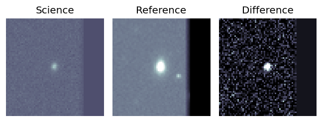

TESS: Sectors [ 3 30 97 108]
NED photo-z only: WISEA J020344.07-163544.2 (G, 0.6″) z=0.0563 [zflag PUN] — not used for peak abs mag
PS1: 0 sources in 3 arcsec
LegacySurvey: 0 sources in 3 arcsec

Extinction-corrected gr color:
From alerts: -0.04 +/- 0.11 mag
Consistent with synchrotron, g-r>0!
Rise Rate:
g: 0.46 mag/day
r: 1.26 mag/day
Fade Rate:
Section 2: Older Sources Observed Last Night (10)
1. [ZTF] ZTF26aciblmb (Afterglow?FBOT?) (TNS: AT 2026akmk) [Back to Top] [Share] [Trigger Swift] [Fritz Alert] [Fritz Source] [Lasair]RA, Dec: 120.17862, 19.62504 8h 0m42.87s, 19d37m30.13sGalactic (l, b): 202.16124, 23.74719 WARNING: -0.9 deg from ecliptic plane ext(g-r) = 0.042

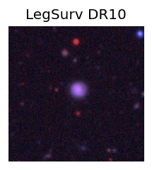
TESS: Sectors [44 45 46 71]
NED host (10 arcsec):Found WISEA J080042.80+193731.9 (G, 2.0″); NED spec-z: z=0.1193 [zflag SLS]; peak abs mag = -19.64
PS1: 0 sources in 3 arcsec
LegacySurvey: 1 sources in 3 arcsec Closest: d = 1.48 arcsec, 263.2 deg (east of north) photoz=0.11 (68% bounds 0.08, 0.21), type=SER peak abs mag (ext. corrected) = -19.45 (68% bounds -18.7, -21.03)
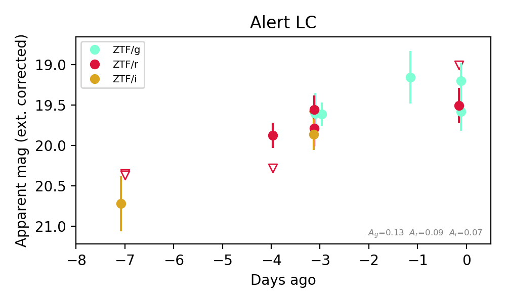
Extinction-corrected gr color:
From alerts: -0.13 +/- 0.27 mag
Extinction-corrected gi color:
From alerts: 1.26 +/- 99 mag
Extinction-corrected ri color:
From alerts: -0.22 +/- 0.24 mag
Consistent with synchrotron, g-r>0!
Rise Rate:
g: 0.11 mag/day
r: 0.85 mag/day
i: 0.22 mag/day
Fade Rate:
2. [ZTF] ZTF26acieeou (Afterglow?) (TNS: AT 2026akqr) [Back to Top] [Share] [Trigger Swift] [Fritz Alert] [Fritz Source] [Lasair]RA, Dec: 32.08148, -6.79235 2h 8m19.55s, -6d-47m-32.46sGalactic (l, b): 168.34124, -62.67322 ext(g-r) = 0.023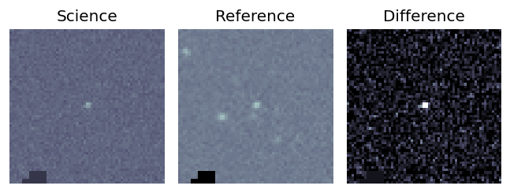
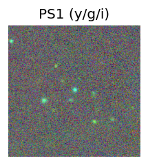
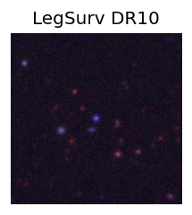
Milliquas v8 (2 arcsec):Found None (description), name = None, QSO probability: None %
TESS: Sectors [ 4 97 108]
SDSS (<15 kpc):Found SDSS phot-z: z=0.45; peak abs mag = -23.25
PS1: 0 sources in 3 arcsec
LegacySurvey: 1 sources in 3 arcsec Closest: d = 0.10 arcsec, 105.4 deg (east of north) photoz=1.89 (68% bounds 1.72, 2.0), type=PSF peak abs mag (ext. corrected) = -27.07 (68% bounds -26.83, -27.23)
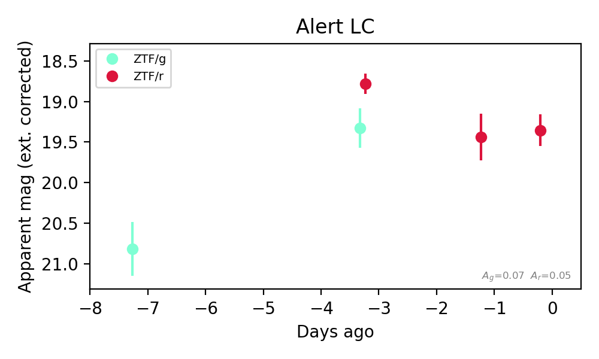
Extinction-corrected gr color:
From alerts: 0.54 +/- 0.27 mag
Consistent with synchrotron, g-r>0!
Rise Rate:
g: 0.38 mag/day
r: 0.11 mag/day
Fade Rate:
r: 0.21 mag/day
3. [ZTF] ZTF26achvezg (FBOT?) (TNS: AT 2026akfm) [Back to Top] [Share] [Trigger Swift] [Fritz Alert] [Fritz Source] [Lasair]RA, Dec: 17.02342, 13.02123 1h 8m5.62s, 13d 1m16.41sGalactic (l, b): 129.20449, -49.64756 ext(g-r) = 0.021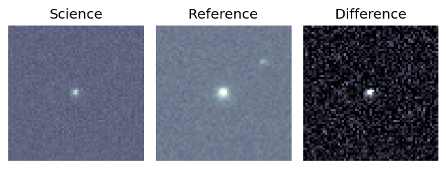
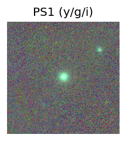
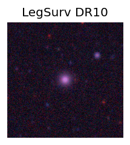
TESS: Sectors [42 43 70]
SDSS (<15 kpc):Found SDSS phot-z: z=0.09; peak abs mag = -20.11
PS1: 0 sources in 3 arcsec
LegacySurvey: 1 sources in 3 arcsec Closest: d = 0.13 arcsec, 43.9 deg (east of north) photoz=0.07 (68% bounds 0.05, 0.09), type=SER peak abs mag (ext. corrected) = -19.58 (68% bounds -18.82, -20.05)
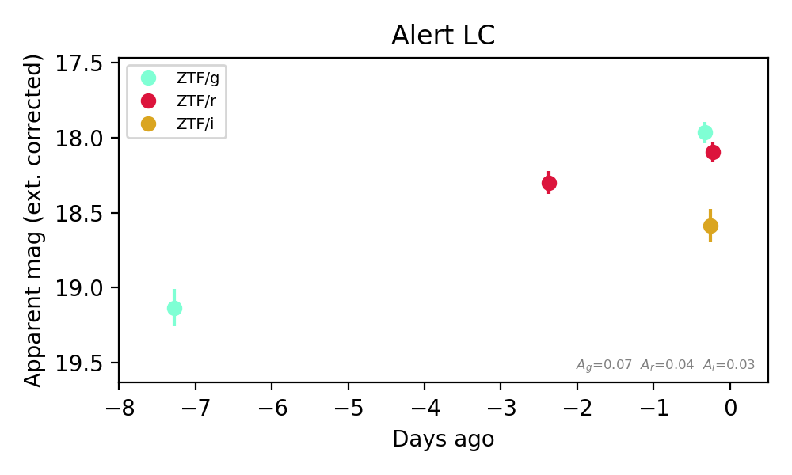
Extinction-corrected gr color:
From alerts: -0.13 +/- 0.1 mag
Extinction-corrected gi color:
From alerts: -0.62 +/- 0.13 mag
Extinction-corrected ri color:
From alerts: -0.49 +/- 0.13 mag
Rise Rate:
g: 0.22 mag/day
r: 0.2 mag/day
i: 0.11 mag/day
Fade Rate:
4. [ZTF] ZTF26aciafcn (FBOT?) (TNS: AT 2026akmw) [Back to Top] [Share] [Trigger Swift] [Fritz Alert] [Fritz Source] [Lasair]RA, Dec: 356.08019, 25.76194 23h44m19.24s, 25d45m42.98sGalactic (l, b): 104.49738, -34.69575 ext(g-r) = 0.06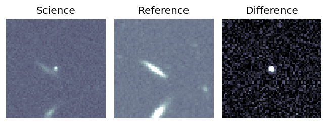
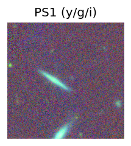
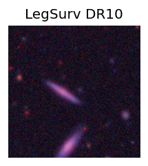
TESS: Sectors [83 84]
SDSS (<15 kpc):Found SDSS phot-z: z=0.09; peak abs mag = -20.00
PS1: 0 sources in 3 arcsec
LegacySurvey: 1 sources in 3 arcsec Closest: d = 3.04 arcsec, 284.0 deg (east of north) photoz=0.4 (68% bounds 0.32, 0.51), type=REX peak abs mag (ext. corrected) = -23.7 (68% bounds -23.16, -24.3)
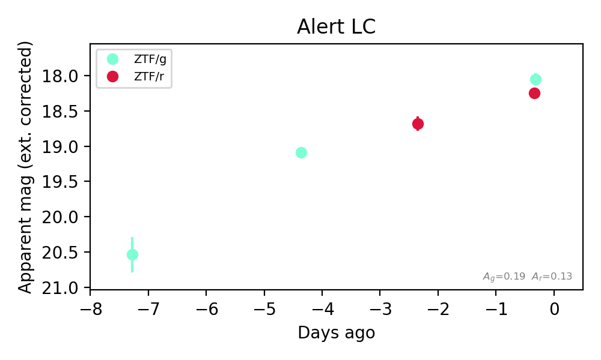
Extinction-corrected gr color:
From alerts: -0.2 +/- 0.1 mag
Rise Rate:
g: 0.28 mag/day
r: 0.22 mag/day
Fade Rate:
5. [ZTF] ZTF26aciafde (FBOT?) (TNS: AT 2026akqj) [Back to Top] [Share] [Trigger Swift] [Fritz Alert] [Fritz Source] [Lasair]RA, Dec: 350.64927, 27.66065 23h22m35.82s, 27d39m38.33sGalactic (l, b): 99.88788, -31.20511 ext(g-r) = 0.139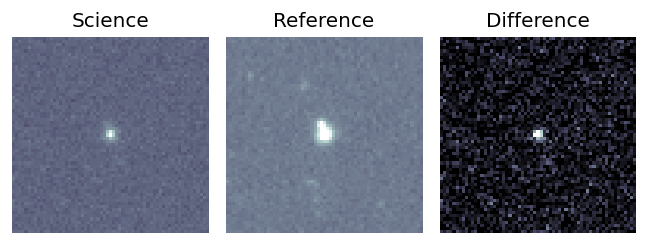
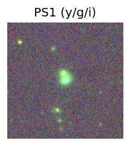
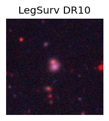
TESS: Sectors [56 83]
SDSS (<15 kpc):Found SDSS phot-z: z=0.13; peak abs mag = -20.54
PS1: 0 sources in 3 arcsec
LegacySurvey: 1 sources in 3 arcsec Closest: d = 0.16 arcsec, 144.5 deg (east of north) photoz=0.11 (68% bounds 0.1, 0.12), type=SER peak abs mag (ext. corrected) = -20.22 (68% bounds -20.09, -20.37)
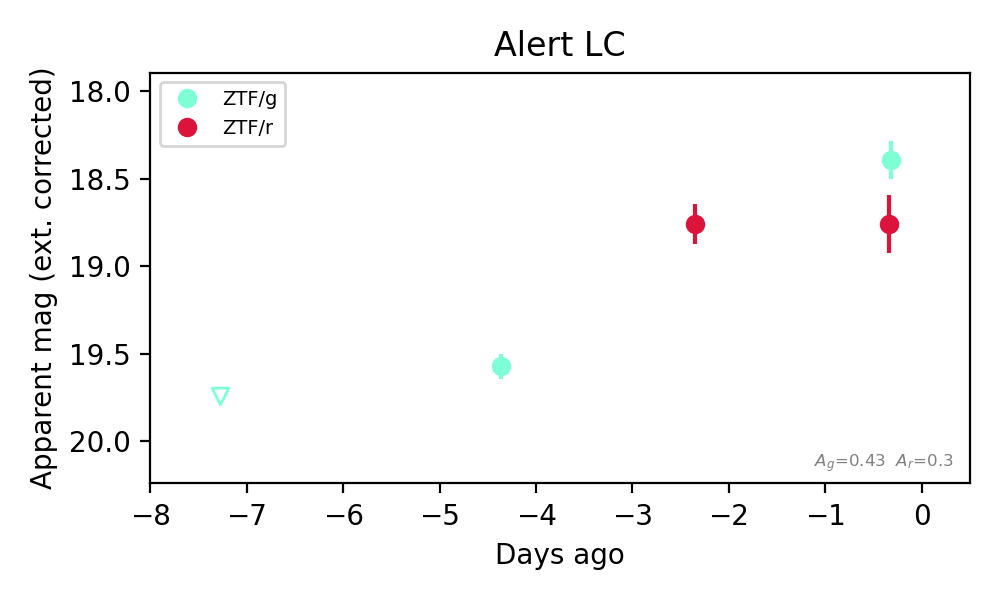
Extinction-corrected gr color:
From alerts: -0.37 +/- 0.2 mag
Rise Rate:
g: 0.29 mag/day
r: 0.13 mag/day
Fade Rate:
6. [ZTF] ZTF26achzwkm (FBOT?) (TNS: AT 2026ajsb) [Back to Top] [Share] [Trigger Swift] [Fritz Alert] [Fritz Source] [Lasair]RA, Dec: 183.40795, 16.12522 12h13m37.91s, 16d 7m30.79sGalactic (l, b): 262.46406, 75.93266 ext(g-r) = 0.04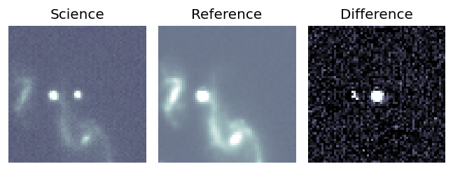
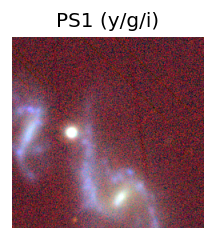
TESS: Sectors [22 49]
SDSS (<15 kpc):Found SDSS phot-z: z=0.58; peak abs mag = -26.73
PS1: 0 sources in 3 arcsec
LegacySurvey: 1 sources in 3 arcsec Closest: d = 6.15 arcsec, 88.7 deg (east of north) photoz=0.03 (68% bounds 0.02, 0.05), type=DEV peak abs mag (ext. corrected) = -20.0 (68% bounds -19.09, -20.79)
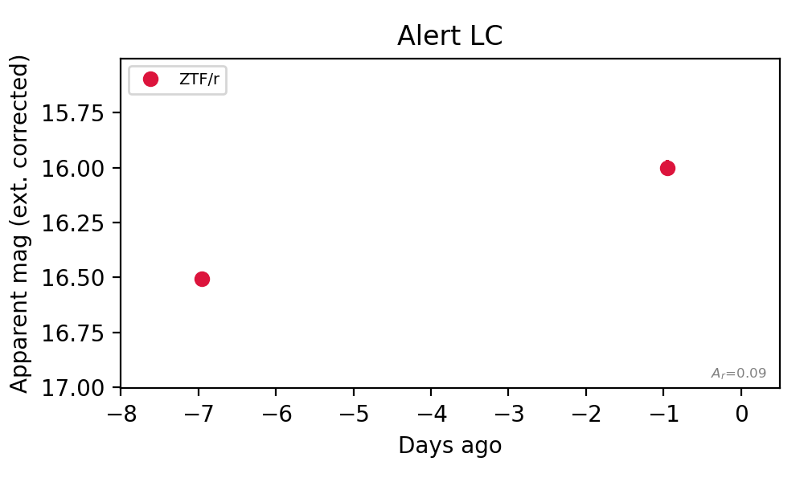
Rise Rate:
r: 0.56 mag/day
Fade Rate:
7. [ZTF] ZTF26aciiosg (FBOT?) (TNS: AT 2026akpx) [Back to Top] [Share] [Trigger Swift] [Fritz Alert] [Fritz Source] [Lasair]RA, Dec: 183.76813, 13.59525 12h15m4.35s, 13d35m42.89sGalactic (l, b): 269.01849, 74.02216 ext(g-r) = 0.033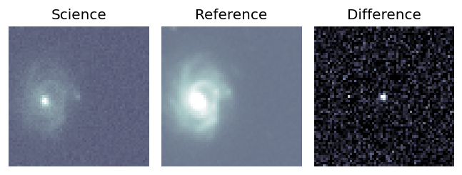
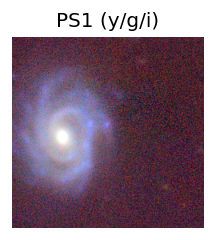

TESS: Sectors 49
PS1: 0 sources in 3 arcsec
LegacySurvey: 1 sources in 3 arcsec Closest: d = 2.41 arcsec, 24.3 deg (east of north) photoz=0.11 (68% bounds 0.02, 0.19), type=REX peak abs mag (ext. corrected) = -19.5 (68% bounds -16.07, -20.81)
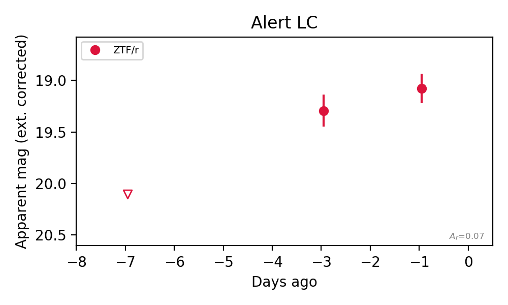
Rise Rate:
r: 0.2 mag/day
Fade Rate:
8. [ZTF] ZTF26aciitak (Afterglow?) (TNS: AT 2026ajpt) [Back to Top] [Share] [Trigger Swift] [Fritz Alert] [Fritz Source] [Lasair]RA, Dec: 317.91346, -23.14697 21h11m39.23s, -23d-8m-49.08sGalactic (l, b): 24.68958, -40.48562 ext(g-r) = 0.048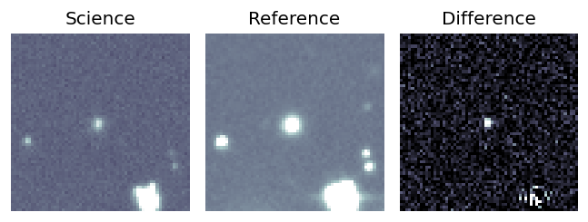
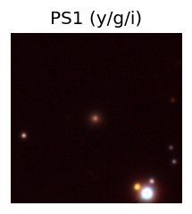
TESS: Sectors [ 1 28 92 116]
PS1: 0 sources in 3 arcsec
LegacySurvey: 0 sources in 3 arcsec
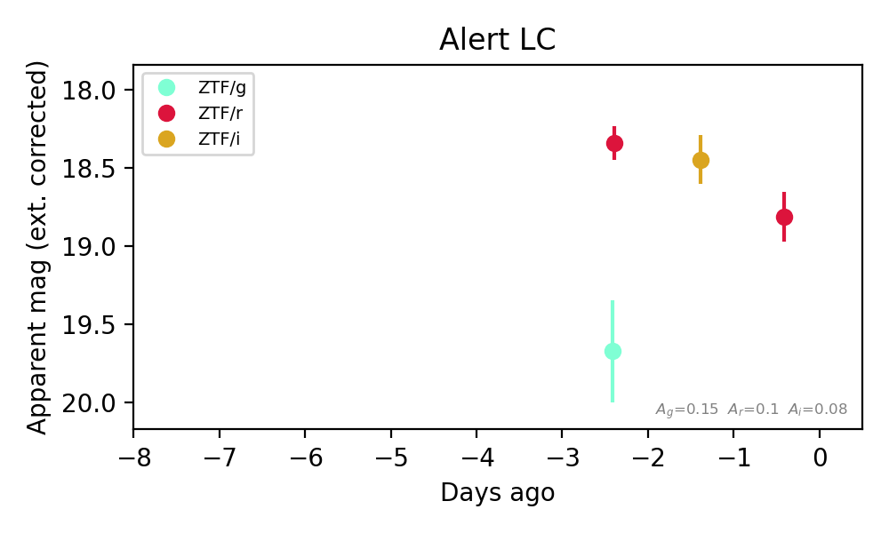
Extinction-corrected gr color:
From alerts: 1.34 +/- 0.34 mag
Consistent with synchrotron, g-r>0!
Rise Rate:
i: 0.04 mag/day
Fade Rate:
r: 0.24 mag/day
9. [ZTF] ZTF26acikilo (Afterglow?) (TNS: AT 2026akqh) [Back to Top] [Share] [Trigger Swift] [Fritz Alert] [Fritz Source] [Lasair]RA, Dec: 304.68757, -1.34444 20h18m45.02s, -1d-20m-39.97sGalactic (l, b): 42.02999, -19.96985 ext(g-r) = 0.142Coincident trigger: Fermi/GBM GRB261123387 (r=4.4 deg, sep 6.6 deg = 1.49 r; 0.71 d before first detection)Trigger time(s) marked on the light curve; error circles in the localization panel.
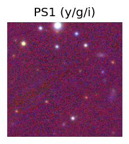
TESS: Sectors 81
PS1: 0 sources in 3 arcsec
LegacySurvey: 0 sources in 3 arcsec

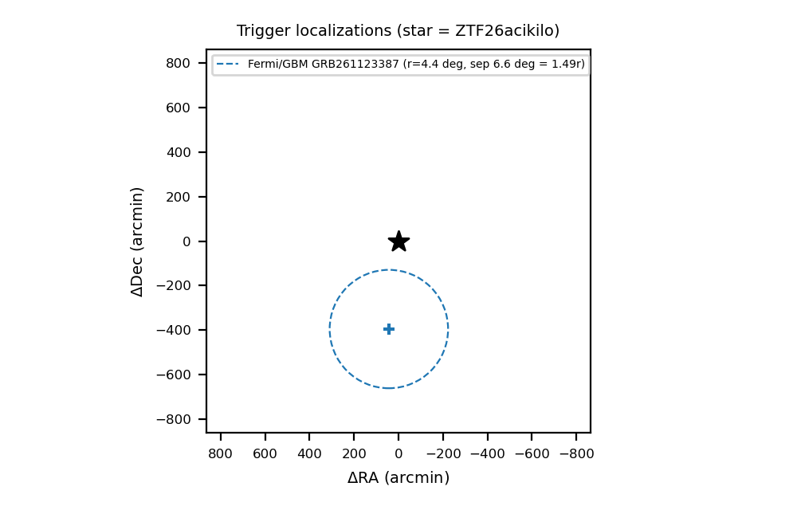
Extinction-corrected gr color:
From alerts: 0.32 +/- 0.19 mag
Extinction-corrected ri color:
From alerts: -0.5 +/- 0.12 mag
Consistent with synchrotron, g-r>0!
Rise Rate:
g: 0.18 mag/day
r: 0.15 mag/day
i: 0.64 mag/day
Fade Rate:
r: 0.44 mag/day
10. [ZTF] ZTF26acimzrd (FBOT?) (TNS: AT 2026akqi) [Back to Top] [Share] [Trigger Swift] [Fritz Alert] [Fritz Source] [Lasair]RA, Dec: 44.82411, 7.36554 2h59m17.79s, 7d21m55.94sGalactic (l, b): 169.4597, -43.65835 ext(g-r) = 0.219
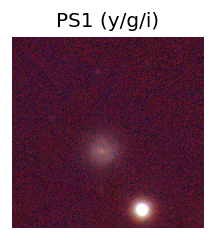
TESS: Sectors [ 4 31 42 43 44 70 71]
PS1: 0 sources in 3 arcsec
LegacySurvey: 1 sources in 3 arcsec Closest: d = 3.45 arcsec, 141.7 deg (east of north) photoz=0.13 (68% bounds 0.07, 0.2), type=EXP peak abs mag (ext. corrected) = -20.62 (68% bounds -19.42, -21.72)

Extinction-corrected gr color:
From alerts: 0.2 +/- 0.26 mag
Extinction-corrected gi color:
From alerts: -0.07 +/- 0.31 mag
Extinction-corrected ri color:
From alerts: -0.28 +/- 0.23 mag
Consistent with synchrotron, g-r>0!
Rise Rate:
g: 0.34 mag/day
r: 0.24 mag/day
i: 0.26 mag/day
Fade Rate:
Section 3: Already classified as a supernova on TNS (0)